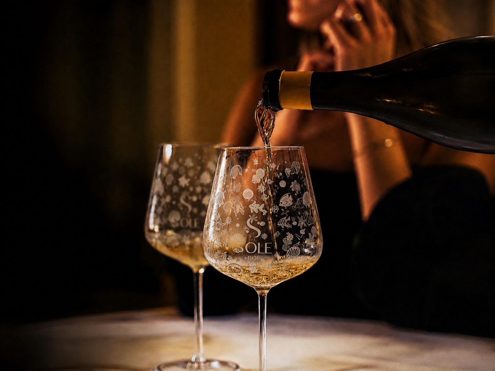
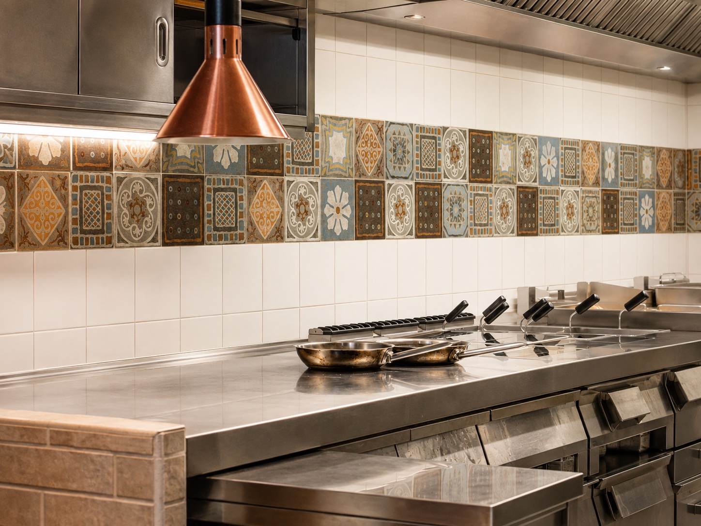
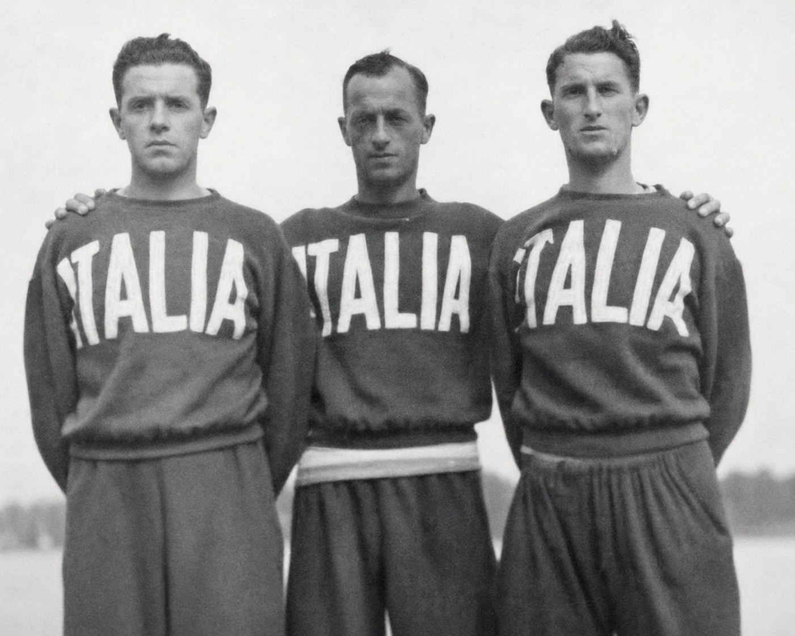

Rapallo | Riviera Ligure
Il Sole 1936
Bar e ristorante in riva al mare a Rapallo: cucina ligure, pesce, vista mare e il ritmo lento della Riviera.
Ristorante

Ristorante
Cucina ligure di mare con vista Rapallo.
Una cucina ligure contemporanea, ricette originali e materie prime regionali: dal pranzo alla cena, Il Sole 1936 accoglie chi cerca pesce, gusto e una tavola affacciata sul mare.
Dal pranzo vista mare alla cena romantica, ogni tavolo resta vicino al ritmo della costa.
Location

Location
Una terrazza sul mare nel cuore di Rapallo.
La location del Sole 1936 guarda direttamente la costa: un luogo raccolto, luminoso e scenografico per vivere Rapallo dal mare, tra il Castello e la passeggiata.
La nostra storia
La nostra storia
Sole 1936 nasce dalle radici di Rudy Luxardo e dal desiderio di trasformare la memoria familiare in un’esperienza da condividere.
Il nome rende omaggio al nonno Luigi, pescatore e atleta, che nel 1936 partecipò ai Giochi Olimpici di Berlino con la squadra italiana di canottaggio.
Dalla nonna Silvia e dalla mamma Mimma, Rudy ha imparato il valore del cibo come gesto d’amore. A questa eredità ha unito sapori e ispirazioni raccolti durante i suoi viaggi, dando vita a una cucina in cui la Liguria incontra il mondo.

«Ogni piatto è un ponte tra le nostre radici e le storie raccolte lungo il viaggio.»
Recensioni
Dite di noi
"Una vista splendida, pesce curato e un servizio che rende la cena davvero speciale."
"Cucina di mare, atmosfera romantica e una posizione che a Rapallo resta impressa."
"Piatti originali, materie prime fresche e un tavolo vista mare da ricordare."
Contatti
Vieni a trovarci.
16035 Rapallo (GE)
Raggiungici sul lungomare di Rapallo, nella zona del Castello sul mare: il ristorante si affaccia direttamente sulla costa.
Da martedì a domenica. Lunedì chiuso, salvo festivi e ponti.